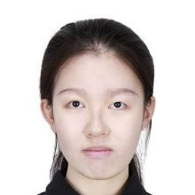

People
Our group brings together students from statistics, computer science, and neuroscience. Interested in joining? See the note for prospective students.
Ph.D. Students
-

Yang Xiang
Ph.D. student in Statistics (co-advised with Prof. Andrew Nobel)
Network alignment; continuous connectivity
-
Gabriel Sargent
Ph.D. student in Statistics (co-advised with Profs. Yufeng Liu and Will Wei Sun)
Prediction-powered inference
-
Ishmael Benjamin Torres Aguilar
Ph.D. student in Statistics (co-advised with Prof. Yufeng Liu)
Data integration; generative modeling; foundation models
Master's Students
-

Yu Chen
Master's student in Statistics, UNC Chapel Hill
-

Jialiang Yao
Master's student in Statistics, UNC Chapel Hill
Undergraduate Students
-

Gloria Yang
Undergraduate researcher, UNC Chapel Hill
Alumni
Ph.D. Students and Postdocs
- Adrian Allen — Ph.D. in Statistics, UNC Chapel Hill (co-advised with Prof. Andrew Nobel). Thesis: Exploratory and Comparative Statistical Tools for Connectome Research
- Andrew Ackerman — Ph.D. in Statistics, UNC Chapel Hill (co-advised with Profs. J. S. Marron and Jan Hannig). Thesis: Multi-faceted Brain Imaging Data Integration via Analysis of Subspaces
- Martin Cole — Ph.D. in Statistics, University of Rochester, 2023 (co-advised with Prof. Xing Qiu). Thesis: Scratching the Surface: Surface-based Cortical Registration and Analysis of Connectivity Functions
- Bayan Saparbayeva — Postdoctoral fellow, 2019–2021 (joint with Prof. Giovanni Schifitto).
- Brian Rook — Postdoctoral fellow, 2018–2020 (joint with Prof. Feng Vankee Lin).
Master's Students
- Yifei Zhang — M.S. in Statistics, UNC Chapel Hill. Next: Ph.D. program, Yale University. Thesis: Connectome Data Integration
- Kyungjin Sohn — M.S. in Statistics, UNC Chapel Hill, 2023. Next: Ph.D. program, Department of Statistics, University of Wisconsin–Madison. Thesis: Brain Network Analysis
- Jimin Choi — M.S. in Statistics, UNC Chapel Hill, 2022. Thesis: Human Trait Prediction Using Brain Connectome Data
- Xuelin Wang — M.S. in Biostatistics, University of Rochester, 2020.
- Huijing Ren — M.S. in Biostatistics, University of Rochester, 2020.
- Sheng Wang — M.S. in Biostatistics, University of Rochester, 2019.
Undergraduate Students
- Ziqian Zhang — Undergraduate researcher, UNC Chapel Hill. Next: Ph.D. program, University of Virginia.
- Kaiyi (Kevin) Liu — Undergraduate researcher, Boston University (B.S. 2026). Next: Ph.D. program, Department of Statistics, University of California, Berkeley.